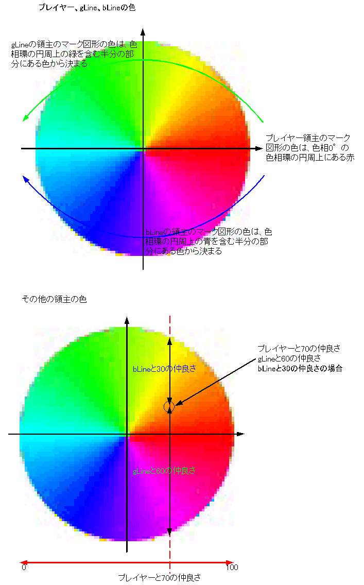

第7章
第7章に関係するプログラムを、Windows上で全て一括してコンパイルすることができます。
CD-ROMのc7ディレクトリをそのままHDDにコピーし、javacコマンドの動作するコマンドラインから実行して下さい。
Linuxをお使いの場合は、この内容を参考に、シェルスクリプトを書けばよいでしょう。
Slg
Relation
Selector
Game2D（第4章で既出）
Sprite（第2章で既出）
Draw（第2章で既出）
SoundPalette（第3章で既出）
Queue（第4章で既出）
InputEventTiny（第4章で既出）操作方法
カーソルキー左右でコマンドを選択し、対象をマウス操作で指定します。詳しくは本文を参照して下さい。
